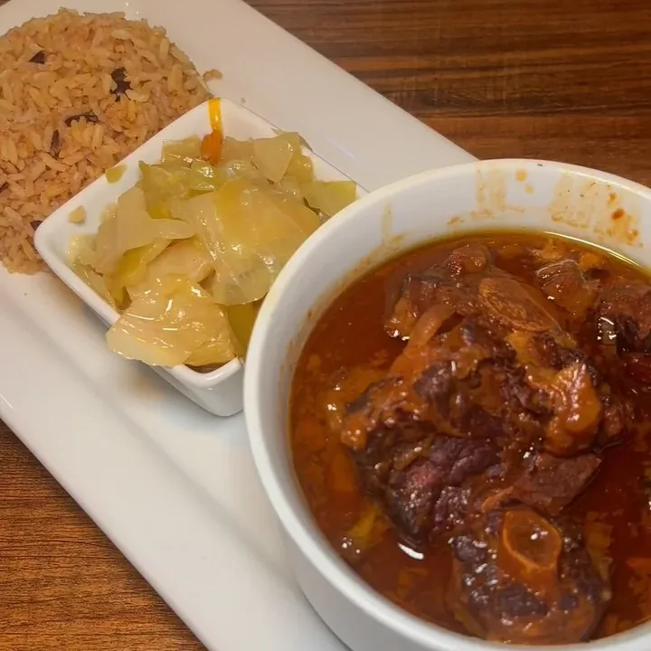
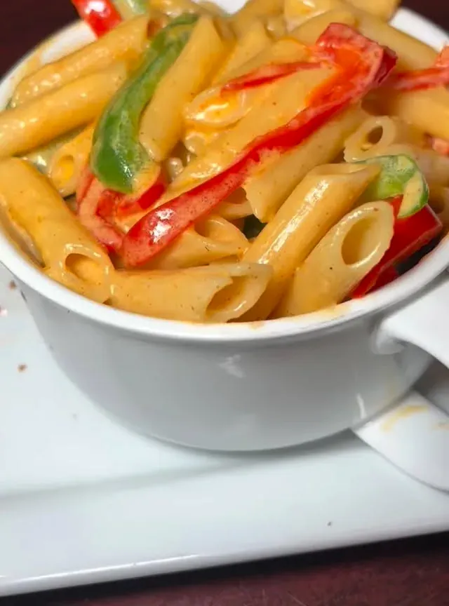
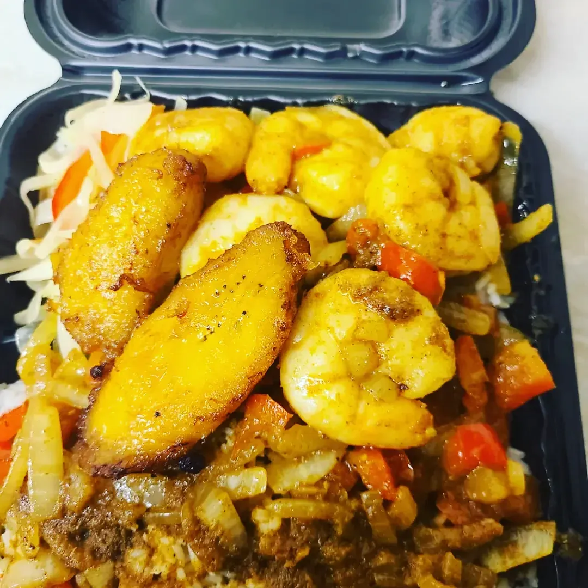
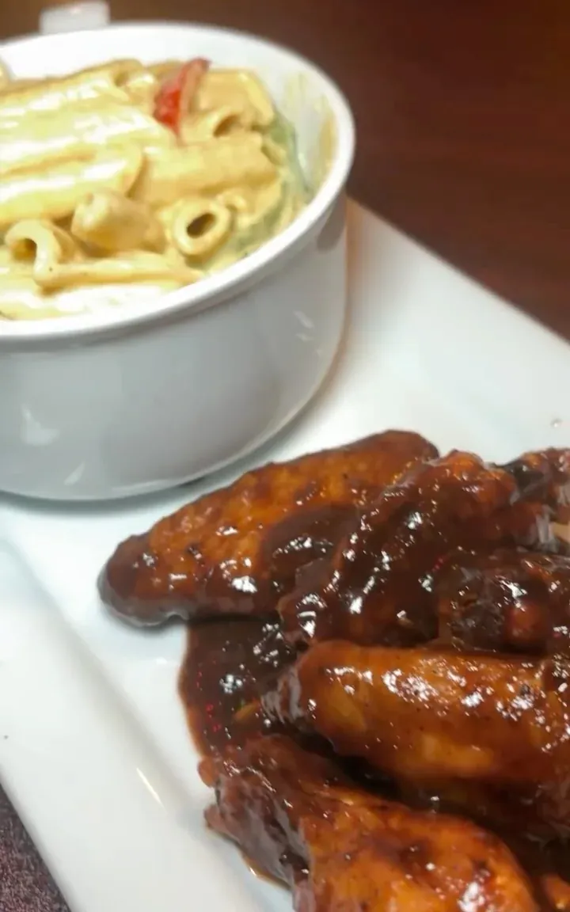
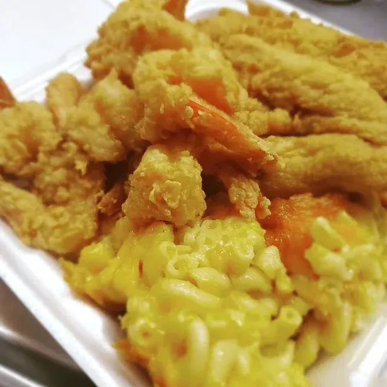
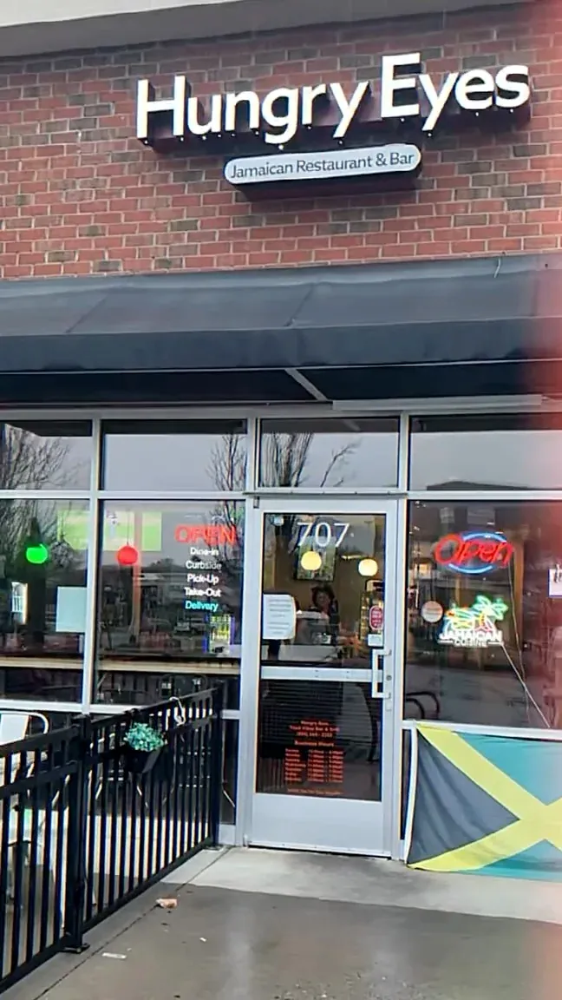

Oxtail, rice & peas
Slow-cooked, rich and full of flavor. The oxtails fall off the bone into a deep brown gravy and land next to a mound of rice & peas. This is the plate that made the name.
Jamaican Restaurant & Bar · Short Pump
Oxtail that falls off the bone, flame-kissed jerk chicken, curry goat and rasta pasta. Big Jamaican plates, a busy bar and Friday nights that go off, all in one family-run spot in Short Pump.
Open Mon 11:30 AM – 7 PM, Tue – Thu 11 AM – 9 PM, Fri – Sat 11 AM – 10 PM, Sun 12 – 6 PM

Signature dishes
Five plates that keep Short Pump coming back. Slow-cooked, well seasoned, and served in portions that regulars love to talk about.
Slow-cooked, rich and full of flavor. The oxtails fall off the bone into a deep brown gravy and land next to a mound of rice & peas. This is the plate that made the name.

Perfectly seasoned and flame-kissed, with the smoky char and slow heat that jerk is supposed to have. Get it as a plate, or go jerk wings on a Friday.

Penne in a creamy, seasoned sauce tossed with red and green peppers. Always the star, and a Friday night special when the DJ is on.

A full plate of whole snapper, one to two pounds, made your way: fried, steamed or brown stewed, finished with peppers and onions.

Curry goat, curry chicken and brown stew chicken, simmered low and slow, plus shrimp cooked your way. Curry chicken and brown stew chicken are $16 with rice.




Every Friday night
After dinner, Hungry Eyes turns into Yaad Vibes Bar & Grill. Grab the mic, then let the DJ take it from there.


Why people come back
Big portions.
Plates come loaded: rice & peas, sides and the main event, all on one plate. It is the number one thing people mention.A recurring theme in Google reviews
The oxtails.
Slow-cooked until they fall off the bone, in a gravy you will want extra rice for. The house says the oxtails speak for themselves.The signature plate
Family-run warmth.
A local food creator called Hungry Eyes “a family-run spot” where the whole family makes you feel welcome.From a creator post on Instagram
Fridays go off.
Karaoke at six, a live DJ at eight, jerk wings and $5 drink specials. Short Pump’s Friday plan, sorted.Yaad Vibes Friday
| Mon | 11:30 AM – 7 PM |
|---|---|
| Tue – Thu | 11 AM – 9 PM |
| Fri – Sat | 11 AM – 10 PM |
| Sun | 12 PM – 6 PM |

Good to know
Hungry Eyes is at 201 Towne Center W Blvd, Suite 707, Richmond, VA 23233, in Short Pump near West Broad Village. Look for the Hungry Eyes sign and the Jamaican flag at the door of Suite 707.
Monday 11:30 AM to 7 PM, Tuesday through Thursday 11 AM to 9 PM, Friday and Saturday 11 AM to 10 PM, and Sunday 12 PM to 6 PM. Holiday closures are posted on Instagram @hungryeyesrva.
Yes. Call (804) 664-2283 to order for pickup, and delivery is available on DoorDash.
Oxtail with rice & peas is the signature. Regulars also come for jerk chicken, curry goat, brown stew chicken, rasta pasta and the whole snapper meal, and the portions are big.
On the in-house menu board, curry chicken and brown stew chicken are $16, fried chicken is $17, wings start at $12.95, sides are $7 and patties are $3.50. Entrées come with rice & peas or white rice and steamed vegetables.
There is no booking system. Just come in. For a large group, call ahead at (804) 664-2283.
Yes. Parking is in the shared shopping-center lots around Towne Center West Blvd in the West Broad Village area.
Yaad Vibes Friday: self-serve karaoke starts at 6 PM and a live DJ takes over at 8 PM with reggae, dancehall, soca and afrobeats, plus $5 drink specials.
Yes. Hungry Eyes is a family-run Jamaican spot, and the logo has read "See Good Food and Eat, Since 2009."
Call ahead and your plate will be ready when you pull up. Or come sit at the bar and stay a while.